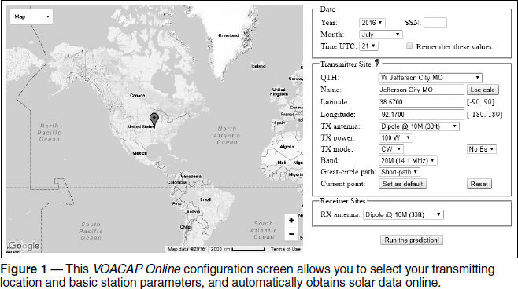
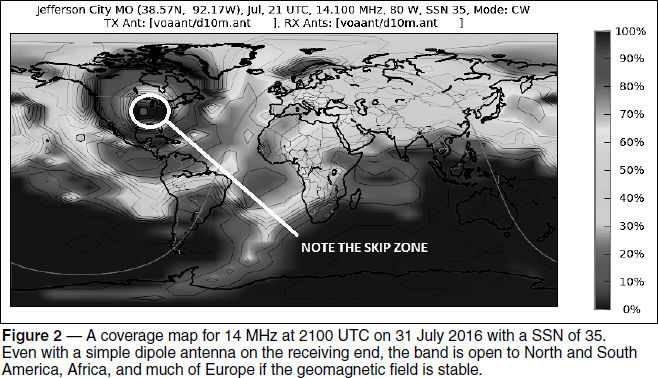

Experiment #165 — Propagation Prediction
While we all knew Solar Cycle 24 was headed to a solar minimum sooner or later, over the past few months there has been a lot of hope that maybe there would be a few more months of sunspots. Well, the reality is that there have been quite a few spotless days lately, and we are assured of more to come. Luckily, there are great tools and more data than ever before to help you make your on-the-air minutes count. This month, we’re going to learn about an excellent and free resource, VOACAP Online.
Propagation Prediction — Then and Now
Before the Internet, the only information available to most hams were the hourly announcements from WWV and WWVH, of the solar flux and K indices along with the condition of the geomagnetic field.1 A simple chart gave you some idea of whether conditions were better or worse than “normal,” whatever “normal” meant. Numeric tables of monthly estimates generated by programs like IONCAP (Ionospheric Communications Analysis and Prediction Program) and the early coverage maps by pioneering PC programs like W6ELProp have been replaced with sophisticated graphic presentations a far more nuanced view.
The network of NCDXF beacon stations (www.ncdxf.org/pages/beacons.html) is as useful as ever, but is supplemented by the worldwide Reverse Beacon Network (www.reversebeacon.net) of automated receivers, including signal reports of beacon signals. Reception reports (“spots”) once distributed by packet radio bulletin-board systems using PacketCluster software are now available to all via Telnet connections and on websites like dxmaps.com, dxsummit.fi, and dxheat.com. Get on the air, call CQ on CW or RTTY, and within a few seconds, your presence will be made known worldwide!
With all this information around, who needs predictions? Unless you have 24 hours a day to spend watching a computer screen (or watching for DX alerts coming in by text message) you need to decide when you’ll be at the rig. With sunspots on the decline, band openings above 10 MHz will decline too. While the lower-frequency bands improve for long-haul contacts with declining solar flux, you still need to plan for the short openings between daytime absorption and the MUF (maximum usable frequency) falling at night. Good planning makes for happy hams!
VOACAP Online
VOACAP (Voice of America Coverage Analysis Program) was developed to predict broadcast coverage using detailed ionospheric models and the continually improving understanding of interactions between the Sun and Earth’s geomagnetic environment.
While you can download VOACAP and run it on your PC, the software has been made available with an online interface (www.voacap.com) by Jari Perkiömäki, OH6BG/OG6G. It manages a lot of the setup and configuration so that the program is easily usable by beginners. (Once you are familiar with the online version, the PC-based version will allow you additional flexibility and customizing to suit your station more exactly. A user’s manual is available on the VOACAP Online home page.)
Coverage Area Maps
Let’s start with a map of locations for which a particular band is expected to support contacts. Browse to www.voacap.com/coverage.html or click COVERAGE AREA MAP on the VOACAP home page. You’ll see a screen like that shown in Figure 1. For first-time visitors, it will be centered on the “East Pole” (the intersection of 0º E and 0º N). Start by selecting a QTH in the Transmitter Site panel: I selected Jefferson City, Missouri, the closest menu choice to my home. I then selected the transmitter parameters — antenna (dipole at 33 feet), power (100 W), and mode (CW) — and a band (14.1 MHz). The website automatically loads the SSN (smoothed sunspot number) from a solar observatory (35 on the day the map was generated) and uses the date and time of the PC’s clock (2100 UTC on 31 July 2016). The receiving antenna is assumed to be a dipole at 33 feet, as well. Accept those defaults for now.

Click the RUN THE PREDICTION! button to see where 20 meter CW might be open between these two types of stations, and after about 5 seconds of computation you will see a map like that in Figure 2. (Note the skip zone [dark area] around the transmitting location indicated by the bright red dot.) The brighter the color, the more likely it is that you’ll be able to make contact with the signal qualities built in to the online software. (You can configure “quality of service” values in the PC-based version.) Even on a summer afternoon with solar activity the minimum and using low dipoles, there should be opportunities to make contacts galore! Why not get on and call CQ or tune around?

Here are your first assignments: Vary the transmitting parameters to see what effect they have on your coverage map. (All of the antennas are assumed to be oriented in the preferred direction when calculating signal strength.)
■ What happens if you switch from CW to SSB? (Spreading your signal over a 3 kHz bandwidth instead of 300 Hz certainly reduces your available coverage!)
■ What happens if you switch from the low dipole to a ¼-wave vertical with a good ground system? (This could be a significant improvement.)
■ Experiment with raising the dipole in 10-meter increments. At greater heights, why do secondary “holes” in coverage appear? (The elevation pattern of the dipole breaks up into lobes and nulls between them.)
■ Try small Yagis at different heights, too. Extra credit for experimenting with long path (selectable in the GREAT-CIRCLE PATH menu) to see how much power and antenna it might take to work, say, Japan the long way around!
■ Now change the time through the day from around sunrise at your location to night and watch the effects of the Earth’s rotation. (The Sun’s position is shown as a yellow dot on the map.)
Point-to-Point Predictions
Let’s say you do want to see when the bands might be open to a particular location. Maybe there is a DXpedition on, or you might have a friend with whom you make regular contacts. VOACAP Online will “run the numbers” between two points as well. Browse to www.voacap.com/prediction.html and enter your transmitter information as before. This time, select a receiving location such as PY1 — Rio de Janeiro, and you’ll see the hour-by-hour band availability chart update to that in Figure 3.

The bands from 80 through 10 meters each have their own ring showing the expected communication probability for each hour throughout the entire 24-hour day. At least one of the HF bands is open between WØ and PY1 at all times!
Now click the button at the lower right, labeled RUN PREDICTION! to see a bands-by-the-hour chart of propgation reliability.
Planning for propagation is a lot of fun — not as much fun as you’ll have getting on the air and making QSOs you’ve investigated online, but nothing whets one’s DX appetite like a chart saying, “Come and get it!” Once you’re up to speed on VOACAP Online, give the PC-based version a try and you’ll find it to be a very valuable tool in your hands-on repertoire.
1See tf.nist.gov/stations/iform.html for the schedule of information transmitted by WWV and WWVH.